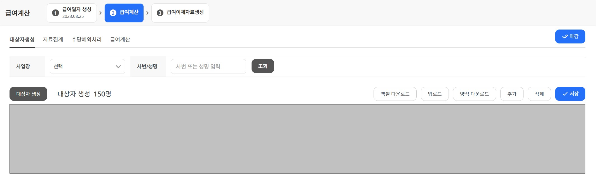

Layout
공통 wizard, table, tab과 sheet영역이 차지하는 레이아웃
- 급여관리 페이지에서는 공통 wizard, table, tab을 사용하며 급여생성 페이지를 제외한 모든 페이지에서는 하단 영역은 sheet 영역이 차지한다.
- 공통 wizard를 사용하므로 공통 레이아웃 중 wizard가 있는 경우의 레이아웃을 사용한다.
- 페이지마다 레이아웃 스타일 조정을 위해 main.main_tab_content 요소에 클래스를 추가하여 사용함.
급여계산의 탭 레이아웃

- 급여계산 페이지는 wizard를 제외한 하단 전부가 tab으로 구성되며, tab은 공통 컨텐츠 tab 스타일을 사용한다.
- main.salary_calculation_wrap 내부에 탭 컨텐츠 별 타겟 section을 나누어 탭 클릭시 보여주도록 구성되어 있다.
- 위 마크업에 대한 script 코드는 아래와 같다.
ibsheet 영역
- sheet영역은 디자인 상에서 height, width 값이 지정되어 있지 않은 경우 브라우저 하단과 상위 요소 width의 전체 영역을 차지하며 개발 시 ibsheet가 들어가는 영역이다.
- section.sheet_section 내부 하단에 div.sheet_area를 추가하여 사용한다.
새창 팝업을 위한 페이지
급여계산중 새창, 급여명세서 새창
급여계산중
급여명세서
- 새창으로 열리는 팝업을 위한 페이지들은 salary.js에서 페이지 url을 이용하여 연다.
- 해당 script는 아래와 같다.